最初のネタとして、パラメトリック曲線の話からはじめたいと思います。 パラメトリック曲線は、滑らかな動きを考える場合によく用いられる物です。 また、しばしば聞くでしょう、NURBS 曲線をマスターするために欠かせないものです。
ところで、『パラメトリック曲線は（離散的なデータを）補間する為のものだ』と思ってる方が いらっしゃると思います。確かに、パラメトリック曲線は、点列等から途中のデータを推測する場合に多く用いらます。 しかし、私の意見はそれだけではありません。パラメトリック曲線は、『少ない情報で曲線を表現する方法』です。 ここでは、補間ではなく、曲線の表現としてのパラメトリック曲線の解説ができればなあと思っています。
パラメトリック曲線とは、パラメータで決まる曲線のことです。パラメータとは何でしょうか、 それは、時間や長さの様な『連続する値を持つ変数』のことです。
例えば、世の中の全ての物体は（運動の法則と初期値が決まっていれば）、時刻を与えるだけで その場所が決まります。時刻を与えれば位置が決まるというシチュエーションは、
X = X(T)
と書けます。これは、物体の位置を表す左辺は、T の関数、つまり、時刻を与えれば値が一意に決まることを表しています。
より、詳細な状況を考えてみましょう。物体が、時刻 T0 に X0 にいて、時刻 T1 に X1 にいたとします。 この物体の T0 から T1 の間の運動は、
X = X(T), (T0 ≦ T ≦ T1) X0 = X(T0), X1 = X(T1),
と書けます。ここで、規格化された時間変数 t を導入します。 t は、0 ≦ t ≦ 1 を満たす様に T と対応付けます。具体的には
T - T0
t = ――――
T1 - T0
とします。物体の位置は、パラメータ t を用いる位置を x (t) として、
X = x(t), (0 ≦ t ≦ 1) X0 = x(0), X1 = x(1),
と書けます。これが、通常見られる変数 x のパラメータ t の曲線の表示です。 変数 t を導入することにより、式の中に初期時刻 T0 と最終時刻 T1 が消えました。 式の中にこれらの変数を残しておくと、運動する時間 τ = T1 - t0 や、運動してきた時間 T - T1 が式の中に沢山現れ、計算が面倒くさくなります。したがって、この形の式が多く用いられます。
パラメータの値 t が実際の時間 T にどう対応するかは、t の定義式を逆に解いて、
T = (T1 - T0) t + T0から、簡単に求めることができます。心配は無用です。
先ほど運動が決まれば時刻を与えるだけで、位置は決まるといいました。 その運動を決めましょう。といっても、物理学はとりあえず置いといて、 与えられた情報だけで決まる運動です。
時刻 0 に X0 に居た物体が、時刻 1 に X1 に居たとします。 このような運動の中で、最も簡単な運動は何でしょうか？ それは、 X0 から X1 まで、真っ直ぐに進む運動です。

直線ですから、この運動は、
X = x (t) = at + b
と書けます。a、b は、時刻 0 と 1 の位置から、
X0 = x (0) = a0 + b = b X1 = x (1) = a1 + b = a + b ⇒ a = X1 - X0 b = X0
と求まるので、結局、
X = x (t) = (X1 - X0) t + X0
となります。
この式の形は、先ほどの時刻 T とパラメータ t の間の関係式にも出てきました。 t = 0 で初期値、t = 1 に最後の値を与え、その途中では t : (1-t) の比率で値を内挿をします。 とにかく、いちばん簡単に２点間を繋ぐ式なので、何かを結ぼうとしたら、 まずこの式を使ってみましょう。